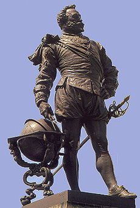

|


SIR FRANCIS DRAKE
Sir Francis Drake was
born near Tavistock in west Devon in 1540 to a seafaring family.
He grew up during a period of intense rivalry between Protestant
England and Catholic Spain over exploitation of the Americas.
As a boy he went to sea as an apprentice. In 1567 he commanded
a ship on an expedition to the New World. In the port of Vera
Cruz, Mexico the English were attacked by the Spanish and lost
all but two of their vessels. The disaster cost Drake everything
he owned but the experience made him determined to fight the
Spanish.
Drake returned
three times to the New World to plunder the Spanish settlements
and destroy their ships. In 1577 he set off again for South America
and sailed up the coast attacking settlements in Chile and Peru,
as well as capturing treasure ships. He sailed north, claimed
California for Queen Elizabeth and then headed west to avoid
the Spanish, as his own ships were now laden with treasure. He
sailed the Pacific and returned to England via The Cape of Good
Hope in 1580. He was the first Englishman to sail around the
world. Queen Elizabeth, who received a share of the plunder,
was understandably delighted with his exploits. She visited him
on his ship, the Golden Hind, and knighted him. Arise Sir Francis
Drake!
In 1585 war broke out with
Spain and Drake returned again to attack Spanish settlements
in the West Indies. He then sailed to Cadiz in southern Spain
and destroyed so many Spanish ships that the planned the invasion
of England was delayed for a year. He called it "singeing
the King of Spain's beard".
When
in 1588 the Spanish sent an Armada to invade England, Drake was
vice-Admiral of the English fleet. Legend has it that at the
time the Armada was sighted Drake was playing bowls on Plymouth
Hoe. When asked to leave as a matter of urgency, his response
was "We have time to finish our game and beat the Spanish
too". In a running battle which lasted a week the Spanish
Armada was completely destroyed.
On
a final expedition to the West Indies, Drake became ill with
dysentry. He died in 1596 and was buried at sea.
Drake is still remembered locally for his leat, which
his company was contracted to build to bring water from Dartmoor
to the city of Plymouth. The eighteen and a half mile leat was
started in December 1590 and was completed in April 1591. It
took only four months to build but carried fresh water to Plymouth
for over three hundred years! Although most of the leat is now
dry, much of its original course can still be clearly seen.
Drake's home was at Buckland Abbey,
Buckland Monachorum which is owned by the National Trust and
is open to the public. Here you will find Drake's Drum which
is supposed to beat at the times of greatest danger for England.
The last time it was said to have been heard was during the Second
World War.
Drake's gretest achievement,
however, and the one for which he will always be remembered,
was to give his name to Drake Hash House Harriers. Now they're
real heroes....
|